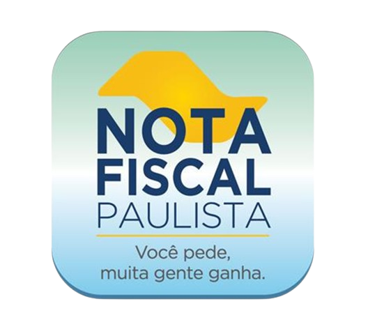

FAÇA UMA DOAÇÃO E AJUDE A AMPLIAR O PROJETO!
Seu apoio é essencial para a continuação desse trabalho!

- CNPJ: 18.443.436/0001.10
- Conta bancária
- Banco: Banco do Brasil
- Conta: 0295-X
- Agência: 79584-4
DOAÇÃO COM NOTA FISCAL PAULISTA
A dedução das doações contribui para reduzir o valor do imposto de renda que o contribuinte deve pagar ao governo. Portanto, ao doar para uma organização como o Espaço Azul, o contribuinte pode reduzir sua carga tributária.
- 1. Cadastre o seu CPF e faça o login no programa Nota Fiscal Paulista
- 2. Selecione a opção Doação Automática com CPF.
- 3. Escolha para qual instituição será destinado o dinheiro e por quanto tempo deseja contribuir.

POR QUE CONTRIBUIR?
Contribuir com a ONG Espaço Azul, que se dedica ao cuidado de crianças e adolescentes autistas é mais do que um ato de generosidade, é um investimento no bem-estar e no futuro desses jovens. Ao apoiar uma organização desse tipo, estamos oferecendo oportunidades para que eles desenvolvam todo o seu potencial e alcancem uma vida plena e feliz.
Além disso, pessoas físicas que optam pelo modelo completo de declaração do imposto de renda podem deduzir as doações feitas a entidades beneficentes do imposto devido. O limite de dedução é de é 6% do imposto devido, calculado antes da dedução das doações.
- 1. Baixe e instale o programa da Receita Federal e entre na parte de Imposto de Renda no seu dispositivo.
- 2. Acesse a ficha doações diretamente na declaração no menu do lado esquerdo da tela e clique em "Novo"
- 3. Selecione o tipo de fundo, que pode ser “Nacional”, “Estadual” ou “Municipal”.
- 4. Em seguida, preencha o valor desejado para a doação e clique em “OK” para concluir o preenchimento da ficha.
- 5. Após isso, é necessário emitir os Documentos de Arrecadação Federal (DARFS) específicos.
- 6. Por fim, informe à instituição escolhida que você realizou uma doação no Imposto de Renda.